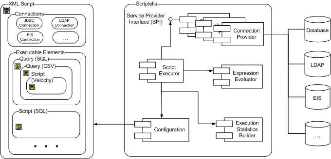
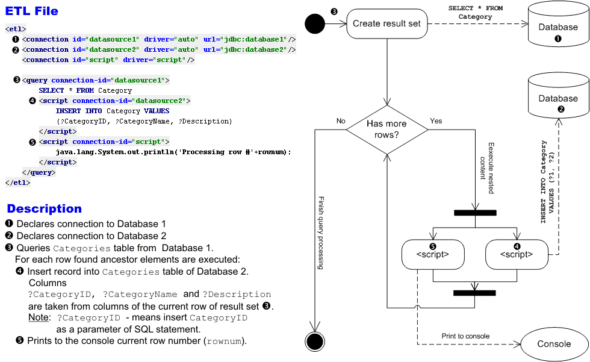
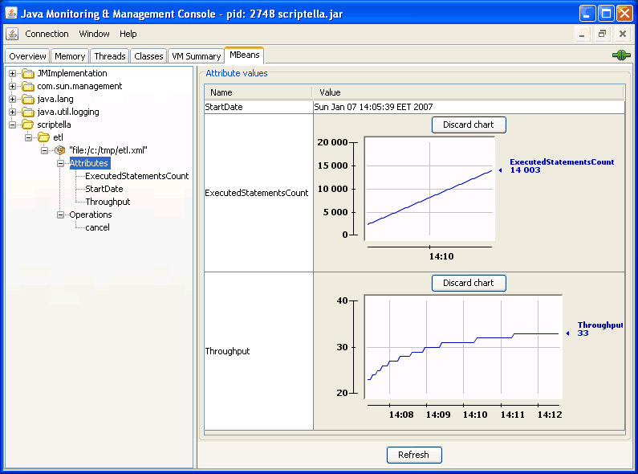

Scriptella reference
Core concepts, ETL syntax, application integrations, JDBC adapters, data sources, examples, and best practices.
Introduction
Scriptella is a Java-based ETL and script execution tool. Its primary scripting language is ordinary SQL executed through JDBC. Other providers add non-JDBC data sources and scripting languages, allowing one ETL file to combine them.

A typical ETL process collects data from one or more sources and loads it into other sources, optionally transforming values along the way. Scriptella provides three basic elements:
- Connection
- A connection to a data source such as a database, directory service, or XML file.
- Script
- Code to execute: SQL, JavaScript, JEXL, or another language understood by the selected driver.
- Query
- Code that reads a data source. A query can contain nested queries and scripts.
Queries work like for each statements. They iterate through rows—such as JDBC result-set rows, LDAP entries, XML elements, or regular-expression matches—and expose each row's columns or attributes as variables to nested elements.

When to use Scriptella
Scriptella is a good fit when you need to:
- Store and execute database SQL without depending on vendor command-line tools, while retaining JDBC features such as references to BLOB content.
- Work with several data sources—for example, reading statistics from one database and storing them in another.
- Keep queries visible as SQL instead of expressing them through a visual query designer.
- Generate test data during execution instead of storing large generated files.
- Perform schema evolution or data migration.
For one-to-one database replication, a dedicated replication tool will usually be a better choice.
System requirements
Scriptella 1.3 requires a Java 8 JDK or JRE. Memory use depends on the ETL and the connection providers it loads; in-process databases may need additional heap.
Installation
- Download the binary distribution.
- Unpack it and add
<SCRIPTELLA_DIR>/binto your systemPATH. - Confirm Java is available by running
java -version. You can useJAVA_HOMEto select a JDK. - Optionally put JDBC drivers needed by your ETL in
<SCRIPTELLA_DIR>/lib, or set a connection'sclasspathattribute.
For Windows:
set PATH=%PATH%;SCRIPTELLA_DIR\binFor Unix-like systems:
export PATH=${PATH}:SCRIPTELLA_DIR/binThe binary distribution (for example scriptella-1.3.zip) has this layout:
scriptella-1.3/
├── bin/ launch scripts (scriptella / scriptella.bat)
├── docs/
│ ├── api/ API documentation
│ └── dtd/ ETL DTD and element documentation
├── lib/ module JARs and bundled libraries
├── scriptella.jar all-in-one JAR used by the launch scripts
├── scriptella-src-ide.zip sources for IDE attachment
├── README.md
├── CHANGELOG.md
├── LICENSE
└── NOTICEThe main libraries are:
lib/scriptella-core.jar— core execution classes.lib/scriptella-drivers.jar— built-in data-source drivers and adapters.lib/scriptella-tools.jar— command-line, Ant, and supporting tools.scriptella.jar— the all-in-one Scriptella JAR (about 580 KB in 1.3). Driver-specific dependencies still need to be supplied separately.
Java sources are included in scriptella-src-ide.zip, which can be attached to scriptella.jar in an IDE.
Script syntax
This example shows the main ETL elements:
<!DOCTYPE etl SYSTEM "http://scriptella.org/dtd/etl.dtd">
<etl>
<description>Copy bugs between databases</description>
<properties>
<include href="script.properties"/>
driver=org.jdbcDriver
</properties>
<connection id="in" driver="$driver" url="$sourceUrl"/>
<connection id="out" driver="$driver" url="$targetUrl"/>
<script connection-id="out">
<include href="dbschema.sql"/>
</script>
<query connection-id="in">
SELECT * FROM Bug
<script connection-id="out">
INSERT INTO Bug VALUES (?ID, ?priority, ?summary, ?status)
</script>
</query>
</etl><etl> is the root element of every Scriptella ETL file.
<properties>
Defines properties that can be substituted in other ETL elements, much like Ant properties. If a property is declared more than once, the first value takes precedence. Use <include> to insert properties from an external file.
<connection>
Defines a connection to a data source. Required attributes depend on the driver. JDBC connections commonly use url, user, and password; they may also specify a catalog or schema.
id- Required when an ETL declares more than one connection. Scripts and queries refer to this value with
connection-id. url- A driver-specific URL. File-based drivers accept absolute locations or paths relative to the ETL file.
driver- A driver class name or alias. The default,
auto, attempts to infer the driver from the URL. See the driver matrix. classpath- Optional driver libraries. Paths are resolved relative to the ETL file and separated with the platform path separator. Absolute URLs are also supported. Libraries in Scriptella's boot classpath take precedence.
lazy-init- When
true, delays opening the connection until an element uses it. The default isfalse.
Lazy initialization is useful when every element using a connection is conditional, or when another connection must first create a database user or produce a required file.
Element text sets driver-specific connection properties. Some drivers also accept properties in their URL.
<!-- Connect to Oracle as the sys user. -->
<connection driver="oracle"
url="jdbc:oracle:thin:@localhost:1521:DB"
user="sys as sysdba"
password="password">
plsql=true
</connection><script>
Contains executable content in the language understood by its connection. A script may include external files and use variables supplied by a parent query.
connection-id- Selects the connection used to execute the script.
new-tx- When
true, executes the script using a dedicated connection instead of the shared transaction. if- Controls conditional execution. For example,
if="rownum gt 1 and name != null and name.length() gt 0"executes only when the row number is greater than one andnameis not empty.
<!-- Use a separate transaction when drop_tables is true. -->
<script connection-id="in" new-tx="true" if="drop_tables">
DROP TABLE Table1;
DROP TABLE Table2;
</script><query>
Contains a query expression in the language understood by its connection. It executes nested elements once per returned row, exposing each column or attribute as a variable.
connection-id- Selects the connection used for the query. Nested elements inherit the connection ID unless they override it.
if- Controls conditional execution. Values such as
true,1,on, andyesare treated as true.
<!-- Select users and write an LDIF entry for every row. -->
<query connection-id="in" if="migrate_users">
SELECT * FROM Users;
<script connection-id="out">
dn: uid=$user_name,ou=people,dc=scriptella
objectClass: inetOrgPerson
uid: $user_name
cn: $user_name
</script>
</query><onerror>
Defines fallback content to execute when its parent script fails. If the fallback itself fails, another matching <onerror> element on the original script may handle that error. The thrown java.lang.Throwable is available to the handler as the error variable.
type- A regular expression matched against the exception type. Partial matching is allowed.
codes- A comma-separated list of vendor error codes or SQL states. The handler runs when any value matches a code reported by the driver.
message- A regular expression matched against the exception message. Partial matching is allowed.
retry- When
true, retries the failed statement after the handler completes. The same handler will not run again for the retry, preventing an infinite loop. connection-id- Runs the handler through another connection, which is useful for logging or recovery with a Java, text, or other driver.
This handler emulates CREATE TABLE IF NOT EXISTS by dropping an existing table and retrying the original statement:
<script connection-id="in">
CREATE TABLE Table1;
<onerror message=".*Table already exists.*" retry="true">
DROP TABLE Table1;
</onerror>
</script>A handler can also pass the error to application code through another connection:
<script connection-id="in">
INSERT INTO TableName VALUES (1, 'Value1');
<onerror connection-id="java">
Throwable error = (Throwable) get("error");
com.app.ApplicationLogger.logEtlError(error);
</onerror>
</script>Expressions and variable substitution
Variable syntax depends on the driver. JDBC drivers support direct substitution, JEXL expressions, and prepared-statement parameters:
$name- Inserts a property or variable value. Dollar-prefixed variables are substituted everywhere except comments.
${expression}- Inserts the result of a JEXL expression.
$nameand${name}return the same value, but the simple form avoids invoking the expression engine. ?nameand?{expression}- Set prepared-statement parameters in SQL queries and scripts. Question-mark expressions are not substituted inside quotes or comments, or outside query and script content.
Substitution is available in connection attributes, the if attribute of queries and scripts, and SQL handled by JDBC-based drivers.
INSERT INTO person(id, full_name)
VALUES (?id, ?{firstName + ' ' + lastName})Scriptella adds utility namespaces to JEXL through EtlVariable:
date:parses and formats dates. For example,${date:today('yyyyMMdd')}formats the current date. See DateUtils.text:provides text helpers. For example,${text:ifNull(a)}returns an empty string whenais null. A JEXL ternary such as${a == null ? '' : a}can be used instead. See TextUtils.class:looks up Java classes. For example,${class:forName('java.lang.System').getProperty('propName')}reads a system property. See ClassUtils.
Other drivers may use different rules or provide no expression substitution. For example, Janino uses get(name) to retrieve a variable. Consult the relevant driver Javadoc. Drivers that use Scriptella's basic substitution support are based on PropertiesSubstitutor and its ${} syntax.
Implicit variables
| Variable | Description | Scope |
|---|---|---|
rownum |
The current query-row number, starting at 1. | Elements nested inside a query |
etl |
The current execution context, including utility methods, connection accessors, and global variables. | All query and script elements |
SQL queries also expose selected columns as variables to nested elements. Columns can be referenced by name or result-set position, such as ?1 and ?2. Non-SQL queries typically expose an equivalent virtual row set; consult the driver Javadoc for its variables.
Referencing files from SQL
The JDBC bridge accepts ?{file expression} for binary files and ?{textfile expression} for text files. The expression can be a quoted file name or any valid JEXL expression:
INSERT INTO document(id, binary_data, text_data)
VALUES (?id, ?{file binaryPath}, ?{textfile textPath})File references are passed as stream-valued prepared-statement parameters, allowing BLOBs and CLOBs up to the size supported by the JDBC driver. Uploading a large text file may create a temporary file on disk.
Declarative formatting and parsing
The text, CSV, and Velocity drivers accept formatting rules as connection properties. The same rule parses incoming text or formats an outgoing value, depending on context.
<connection id="csv_in" driver="csv" url="eurusd_in.csv">
format.RateBid.type=number
format.RateBid.pattern=#.#
</connection>This treats RateBid as a decimal number when CSV or text input is read:
<query connection-id="csv_in">
<script connection-id="db">
INSERT INTO Rates(TIME, CurrencyPair, Bid, Ask)
VALUES (?RateDateTime, ?CurrencyPair, ?RateBid, ?RateAsk);
</script>
</query>For output, the rule formats values written by the driver:
<connection id="csv_out" driver="csv" url="eurusd_out.csv">
format.Bid.type=number
format.Bid.pattern=##.0000
</connection>
<script connection-id="csv_out">
$CurrencyPair,$TIME,$Bid,$Ask
</script>See the text driver's formatting reference for the available types and patterns.
Expression example
This query selects rows from the table named by TABLE and inserts the first row into the table named by TABLE2:
<connection driver="hsqldb"/>
<query>
SELECT V1, V2, V3 FROM $TABLE;
<script if="rownum == 1">
INSERT INTO $TABLE2 VALUES (?V1, ?{V2 + V3});
</script>
</query>Command-line execution
After following the installation instructions, run scriptella with no file arguments to execute etl.xml in the current directory. The launcher adds every JAR in SCRIPTELLA_DIR/lib to the ETL classpath.
You can also use the Java launcher when scriptella.jar is in the current directory:
java -jar scriptella.jar [options] [file1] [file2] ... [fileN]Command-line options
scriptella [options] [file1] [file2] ... [fileN]Options come first; ETL file names or paths follow, separated by spaces.
| Option | Description |
|---|---|
-help, -h | Display help. |
-debug, -d | Print debugging information. |
-quiet, -q | Suppress nonessential output. |
-version, -v | Print the Scriptella version. |
-nostat | Disable statistics collection to reduce overhead. |
-nojmx | Disable JMX MBean registration. |
-template, -t | Create an etl.xml template in the current directory. |
Ant integration
System requirements
Apache Ant 1.10.17 is the tested Release 1.3 environment. Other modern Ant versions may work but are not part of the documented release configuration.
Installation
Use scriptella.jar from the binary distribution. It contains the classes and resources required by the Ant tasks.
<taskdef resource="antscriptella.properties"
classpath="/path/to/scriptella.jar"/>Add database drivers to the task definition's classpath when you want them available to every connection:
<taskdef resource="antscriptella.properties">
<classpath>
<pathelement location="/path/to/scriptella.jar"/>
<pathelement location="lib/hsqldb.jar"/>
<pathelement location="lib/jconn2.jar"/>
</classpath>
</taskdef>Drivers loaded this way are on Scriptella's boot classpath, so individual <connection> elements do not need a classpath attribute.
<etl> task
Parameters
| Attribute | Description | Required |
|---|---|---|
file | ETL file to execute. The extension may be omitted. | No; defaults to etl.xml unless a nested fileset is used. |
inheritAll | Pass Ant project properties to Scriptella. | No; defaults to true. |
debug | Print debugging information. | No; defaults to false. |
nostat | Disable statistics collection. | No; defaults to false. |
nojmx | Disable JMX MBean registration. | No; defaults to false. |
quiet | Suppress nonessential output. | No; defaults to false. |
Nested elements
The task accepts an Ant <fileset> to execute multiple ETL files.
Examples
Execute etl.xml in the current directory:
<etl/>Execute name.etl.xml:
<etl file="name"/>
<!-- Or specify the full name. -->
<etl file="name.etl.xml"/>Execute every .etl.xml file in db:
<etl>
<fileset dir="db" includes="*.etl.xml"/>
</etl><etl-template> task
Parameters
| Attribute | Description | Required |
|---|---|---|
name | Template name. Omitting it generates the default quick-start ETL. | No. |
inheritAll | Pass Ant project properties to Scriptella. | No; defaults to true. |
debug | Print debugging information. | No; defaults to false. |
quiet | Suppress nonessential output. | No; defaults to false. |
Nested elements
This task has no nested elements.
Supported templates
- Default — creates a simple ETL template for a quick start.
- DataMigrator — creates a template for transferring data between tables in different databases.
Examples
Create the default etl.xml:
<etl-template/>Create a data-migration template using values from etl.properties:
<property file="etl.properties"/>
<!-- Set driver, class, user, and password before this task. -->
<etl-template name="DataMigrator"/>Maven integration
Use the modules needed by your application. The future final Release 1.3 will use the following Maven coordinates:
<properties>
<scriptella.version>1.3</scriptella.version>
</properties>
<dependencies>
<dependency>
<groupId>org.scriptella</groupId>
<artifactId>scriptella-core</artifactId>
<version>${scriptella.version}</version>
</dependency>
<dependency>
<groupId>org.scriptella</groupId>
<artifactId>scriptella-drivers</artifactId>
<version>${scriptella.version}</version>
</dependency>
<dependency>
<groupId>org.scriptella</groupId>
<artifactId>scriptella-tools</artifactId>
<version>${scriptella.version}</version>
</dependency>
</dependencies>scriptella-core provides execution and JDBC support, scriptella-drivers provides the bundled non-core drivers, and scriptella-tools provides the command-line and Ant integrations. Driver-specific third-party libraries may still need separate dependencies.
Final release artifacts will be resolved from Maven Central. Until then, build and install the RC locally with mvn clean install rather than adding Scriptella's deployment repositories to a consuming POM.
In-process Java integration
Applications can invoke Scriptella directly instead of using the command-line or Ant launchers. Common uses include preparing and cleaning up test databases, creating or upgrading an application schema at startup, and importing user-supplied data through a managed ETL.
Put the required Scriptella modules and driver libraries on the application classpath, then create and execute an EtlExecutor:
import java.io.File;
import scriptella.execution.EtlExecutor;
EtlExecutor executor = EtlExecutor.newExecutor(new File("etl.xml"));
executor.execute();The URL overload accepts a map of external properties when the ETL needs values supplied by the application:
EtlExecutor executor =
EtlExecutor.newExecutor(etlUrl, externalProperties);
executor.execute();JMX monitoring and management
Scriptella registers a dedicated MBean for each monitored ETL operation. ETL MBeans use this naming convention:
scriptella:type=etl,url=<ETL_XML_FILE_URL>[,n=<COLLISION_ID>]ETL MBeans are registered automatically when Scriptella runs from the command line or Ant. When invoking EtlExecutor directly, enable JMX before execution:
executor.setJmxEnabled(true);
executor.execute();By default, MBeans are registered with the platform MBean server. The JDK's jconsole tool can monitor and manage local or appropriately configured remote JVMs.

Attributes
The following read-only attributes are available:
ExecutedStatementsCount- Number of statements executed by all connections in the ETL task.
StartDate- Date and time when the ETL task started.
Throughput- Number of statements executed per second by the managed task.
Operations
The cancel operation terminates the ETL task and attempts to roll back changes made during execution.
JDBC adapters
Scriptella includes adapters for popular JDBC drivers. Any vendor JDBC driver may be used, but the adapters provide several conveniences:
- Short aliases such as
hsqldbandoracleinstead of full driver class names. - Defaults for performance, syntax parsing, and vendor-specific behavior such as Oracle BLOB handling.
- A stable Scriptella driver name when several JDBC implementations can access the same database. For example, the
jdbcadapter can locate an available compatible implementation on the classpath.
See the JDBC bridge drivers matrix for the complete list of adapters.
Autodiscovery of JDBC drivers
When no driver name is specified, Scriptella can select a supported JDBC adapter from the connection URL. Internally, the auto driver performs this selection:
<connection url="jdbc:sybase:Tds:host:2048/database"/>In this example, the URL causes the auto driver to select the Sybase adapter.
Performance and batching
JDBC batching sends multiple commands to the database in one call. Set statement.batchSize to the number of statements Scriptella should combine before submitting a batch.
statement.fetchSize gives the JDBC driver a hint about how many rows to fetch when more result-set rows are needed:
<connection url="jdbc:oracle:thin:@localhost:1521:orcl">
statement.fetchSize = 1000
</connection>Combining a suitable fetch size for queries with batching for bulk loads can significantly improve performance, especially when databases are on different machines. See the JDBC package batching documentation for details and examples.
Non-relational data source interoperability
See the non-JDBC drivers matrix for the complete list of built-in providers. JDBC bridge drivers can also expose specialized sources through SQL.
Accessing LDAP directories
Scriptella lets transformations use a language suited to each data source. Its LDAP driver supports LDIF scripts and LDAP search-filter queries.
A third-party JDBC-to-LDAP bridge may also be used when SQL-like scripts and queries are preferred.
Working with CSV and text data
The CSV driver queries and generates CSV files. The text driver provides a general-purpose way to read and write text data. A database's own text-table feature can be another option when supported.
Working with XML data
The XPath driver queries XML files with XPath expressions. The text driver can generate XML output.
Using Java code
The bundled Janino provider offers a Java bridge for cases where invoking Java from an ETL file is useful. It exposes properties and methods to <script> and <query> elements.
There are two main ways to integrate Java logic:
- Implement a Scriptella service provider (driver) for the most capable integration.
- Call compiled application code from Janino elements by adding its JAR to the Janino connection's classpath. This keeps the called classes independent of the Scriptella API.
Other Java compilers or interpreters can also be plugged in through custom Scriptella drivers.
Interaction with scripting languages
Scriptella supports JSR 223-compatible scripting languages through the javax.script bridge driver. The specific script engines available depend on the runtime and libraries on the classpath.
Producing reports with Velocity
Velocity is a Java template engine that can generate reports. The Velocity driver runs templates in <script> elements. A typical report:
- Prints a header.
- Queries one or more data sources and produces the report body.
- Prints a footer.
The Primes example demonstrates a simple Velocity report.
URL schemes supported by Scriptella
Connections can refer to external resources with URL protocols supported by the Java runtime, including HTTP, FTP, file, and JAR URLs:
<connection driver="xpath" url="https://example.org/data.xml"/>
<connection driver="csv" url="https://example.org/data.csv"/>
<connection driver="text" url="ftp://example.org/report.txt"/>Examples
The examples archive is available from the download page. Some examples require third-party libraries that cannot be redistributed; those dependencies are listed in the archive's lib/readme.txt.
| Example | What it demonstrates |
|---|---|
| Ant | Integration with Ant. |
| CSV | Working with CSV data through database text tables and Scriptella's CSV and text drivers. |
| DB Upgrade | Using Scriptella as a database schema evolution tool. |
| LDAP | Exchanging data between a database and an LDAP directory. |
| Producing and sending email from Scriptella. | |
| Music Store | Referencing BLOB content in external files and using JDBC escape syntax for portable date values. |
| ODBC | Producing an HTML view from an ODBC data source, including images. |
| Primes | Filling a database with prime numbers and generating HTML and CSV reports with Velocity, JEXL, CSV, and SQL. |
| XML | Working with XML data through XPath expressions. |
Best practices
- Keep connection properties and other settings—such as driver names, URLs, and mode flags—in a property file such as
etl.propertiesinstead of hardcoding them. - Use Scriptella's JDBC adapters when possible.
- Use
<dialect>for database-specific SQL. Properties can make data types configurable across database vendors:CREATE TABLE User ( ID $INTEGER, LOGIN $SMALL_STRING ); -- $INTEGER and $SMALL_STRING are defined in -- a property file such as type-mapping.properties. - Use standard JDBC escape syntax for portable dates, times, and procedure calls. Examples include
{ call procedure_name (...) },{ ? = call procedure_name (...) }, and{ts 'yyyy-mm-dd hh:mm:ss.f...'}. - Use the
.etl.xmlnaming convention. For example,scriptella initfindsinit.etl.xmlautomatically when no file namedinitexists. - For large included scripts, use
<include>to avoid loading the whole file into memory. Considerstatement.batchSizefor bulk database loads.
Using Scriptella as a database schema evolution tool
The DB Upgrade example shows how to build a simple database upgrade and downgrade script. A basic upgrade framework needs to:
- Create and initialize the current schema when no database exists.
- Apply incremental updates that migrate an existing database from version X to version Y.
Scriptella's ability to work with multiple data sources also permits migrations between database vendors or synchronization between systems such as LDAP and a database.
Because Scriptella is lightweight, applications can bundle it and invoke schema upgrades during startup, for example from web-application initialization code.